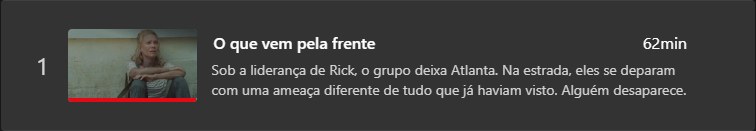
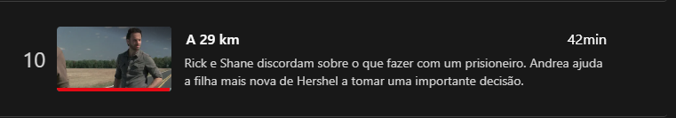

The Walking Dead
Sinopse
Com o mundo se tornando cada vez mais perigoso e a gravidez de Lori (Sarah Wayne Callies) avançando, Rick (Andrew Lincoln) procura um local mais seguro para o grupo. A descoberta chocante da existência de novos inimigos complica ainda mais a situação e uma integrante que estava perdida encontra uma nova comunidade. Liderada pelo Governador, Woodbury é uma cidade ideal para viver, mas nem tudo é o que parece ser.
3° temporada
06/04/23
07/04/23
